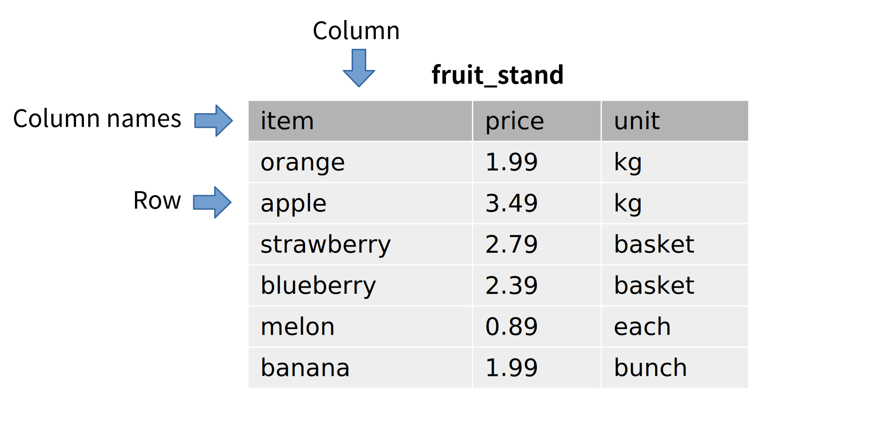

1.1. 基础¶
Basics
本书的第 1 部分主要讲述 SQL, 这是一种与 关系数据库 交互的最流行语言,也是本书的主要焦点。本章的目标是介绍关系数据库和 SQL 的最基本特性。您将学习如何从数据库中提取数据,如何将数据插入数据库,以及如何使用本教科书的互动功能。
Part 1 of this book is all about SQL, the most popular language used for interacting with relational databases, the main focus of the book. The goal of this chapter is to introduce the most simple features of relational databases and SQL. You will learn how to get data out of the database, and how to get data into the database, and how to use this textbook’s interactive features.
1.1.1. 数据库和数据库系统¶
Databases and database systems
在我们开始之前,我们应该定义这两个术语：
- database
一组有组织的数据集合。
- database management system (DBMS)
管理数据库中数据存储的软件,并提供搜索、检索和修改数据库中数据的功能。
“数据库”这个词常被用作简写,既指数据库也指管理它的 DBMS,这两种用法在本教科书中均有出现。此外,“数据库系统”通常被用作 DBMS 的同义词。
Before we start, we should define these two terms:
- database
An organized collection of data.
- database management system (DBMS)
The software that manages the storage of data in a database and provides facilities for searching, retrieving, and modifying data in a database.
The word “database” is frequently used as shorthand to mean both a database and the DBMS managing it, and both usages can be found in this textbook. Also, “database system” is generally used as a synonym for DBMS.
1.1.2. 表¶
Tables
虽然关系数据库可以包含多种类型的 对象,但存储数据的对象类型是 表。数据库中的每个表都有一个名称,通常可以指示该表中可能包含什么类型的数据。表的结构由表的 列 定义,每一列都有一个名称和一个相关的数据类型。实际数据存储在表的 行 中;每一行是一个数据点,并且为表的每一列都有一个值。
我们可以将一个简单的表可视化为,嗯,一个表：
上面的插图显示了一个名为 “fruit_stand” 的表,其中有三列,分别为 “item”、”price” 和 “unit”。尽管插图没有显示数据类型,但我们可以推测 item 和 unit 列包含文本,而 price 列包含十进制数字。fruit_stand 的每一行包含关于水果摊上出售的一种水果的信息。
While relational databases can contain many types of objects, the object type that stores data is the table. Each table in the database has a name, which usually provides some indication of what kind of data can be found in the table. The table structure is defined by the table’s columns, each of which has a name and an associated data type. The actual data is contained in the rows of the table; each row is one data point and has a value for each column of the table.
We can visualize a simple table as, well, a table:
The illustration above shows a table named “fruit_stand” with three columns named “item”, “price”, and “unit”. Although the illustration does not show the data types, we might infer that the item and unit columns contain text and the price column contains decimal numbers. Each row of fruit_stand contains information about one kind of fruit sold at the fruit stand.
1.1.3. 结构化查询语言 (SQL)¶
Structured Query Language (SQL)
现代数据库的一个重要特性是,它们将对文件、表、索引等的低级操作抽象为对数据库管理系统的高级请求。对数据库的请求通常以 查询语言 表达。查询语言是一种编程语言,但与大多数编程语言不同,查询语言往往是声明式而非命令式的。命令式语言要求程序员明确指定执行任务的具体步骤,而声明式语言只是描述所需的结果。
结构化查询语言(SQL)是关系数据库中最流行的查询语言,是一种声明式语言的例子。SQL 由 IBM 的工程师在 1970 年代开发,并在 1986 年由标准组织 ANSI 和 ISO 标准化,之后定期更新。随着关系数据库技术和应用的发展,新的特性不断被添加到 SQL 中。
尽管 SQL 存在标准,但关系数据库对关系模型的实现略有不同,SQL 也有不同的“方言”。尽管存在这些差异,大多数 SQL 方言共享足够的共同点,以至于小心编写的 SQL 代码可以高度移植。教科书中的示例使用 SQLite 数据库引擎,因此使用的是 SQLite 的 SQL 方言。然而,在可能的范围内,示例将能够移植到其他方言;实现之间的显著差异将被指出。由于可用的关系 DBMS 数量庞大,仅包含一些非常流行的 DBMS：SQLite、PostgreSQL、MySQL、Oracle 和 Microsoft SQL Server。
SQLite 示例可以直接在本在线教科书中运行(有关更多信息,请见下文)。附录 A 提供了用于创建本书中使用的数据库的 SQL 脚本,适用于上述每种数据库引擎。
SQL 的基本元素是 语句 或 查询。虽然可以区分这两者(语句用于改变数据库的状态,而查询用于检索数据),但通常可以互换使用这两个术语。SQL 中的语句读起来很像英语句子,但有非常严格的规则。
SQL 通常发音为“sequel”,尽管只说出每个字母也是有效的。
An important characteristic of modern databases is that they abstract low-level operations on files, tables, indexes and so forth into high-level requests to the database management system. Requests to the database are typically expressed in a query language. Query languages are a type of programming language, but are different from most in that query languages tend to be declarative rather than imperative. Whereas imperative languages require the programmer to specify exactly what steps to take to perform a task, declarative languages simply describe a desired outcome.
Structured query language (SQL) is the most popular query language for relational databases, and is an example of a declarative language. SQL was developed by engineers at IBM in the 1970s and was standardized by standards organizations ANSI and ISO in 1986, with regular updates following. New features continue to be added to SQL as relational database technology and applications evolve.
Even though a standard exists for SQL, relational databases have slightly different implementations of the relational model, and similarly different “dialects” of SQL. Despite these differences, most SQL dialects share enough in common that, with care, highly portable SQL code can be written. Examples in this textbook use the SQLite database engine, and thus the dialect of SQL used by SQLite. To the extent possible, however, examples will be portable to other dialects; differences between implementations will be noted where significant. Due to the large number of relational DBMSes available, only a few highly popular DBMSes are included: SQLite, PostgreSQL, MySQL, Oracle, and Microsoft SQL Server.
SQLite examples can be run directly inside this online textbook (more on this below). Appendix A provides SQL scripts to create the database used in this book for each of the database engines listed above.
The basic element of SQL is the statement or query. While a distinction can be made between these two (statements act to change the state of the database, while queries act to retrieve data), it is common to use the terms interchangeably. Statements in SQL read much like English sentences, although with very strict rules.
SQL is often pronounced as “sequel”, although it is equally valid to simply say each letter.
1.1.4. 使用 SELECT 检索数据¶
Retrieving data using SELECT
在其最简单的形式中,**SELECT** 语句可用于从表中检索所有数据。我们只需要知道表的名称：
SELECT * FROM fruit_stand;
这里,**fruit_stand** 是表的名称。* 是与 SELECT 语句一起使用的特殊符号,表示“表中的所有列”。表 fruit_stand 是本教科书示例数据库中的一个表。下面的互动示例将让您查询该数据库;上面的查询已经为您设置好了—点击“Run”查看其结果。结果表的顶部显示了表的列名称。
download: sqlite3 file
sql_basics_example_select
SELECT * FROM fruit_stand;
上述语句(或查询)被称为有两个 子句;子句是 SQL 语句的一部分,通常以 SQL 关键字开头。上述语句中的两个子句是 SELECT 子句 “SELECT *” 和 FROM 子句 “FROM fruit_stand”。大多数子句都是可选的,因为并不是在每个查询中都需要它们,尽管在生成某些所需结果时它们是必需的。
In its simplest form, the SELECT statement can be used to retrieve all data from a table. We just need to know the table name:
SELECT * FROM fruit_stand;
Here, fruit_stand is the name of the table. The * is a special symbol used with SELECT statements to mean “all columns in the table”. The table fruit_stand is one table in the example database for this textbook. The interactive example below will let you query this database; the query above is already set up for you - click on “Run” to see its results. The column names for the table are shown across the top of the result table.
download: sqlite3 file
sql_basics_example_select
SELECT * FROM fruit_stand;
The statement (or query) above is said to have two clauses; a clause is a part of a SQL statement, usually starting with a SQL keyword. The two clauses in the statement above are the SELECT clause, “SELECT *” and the FROM clause, “FROM fruit_stand”. Most clauses are optional in the sense that they are not required in every query, although they will be necessary to produce certain desired results.
1.1.4.1. 检索特定列¶
Retrieving specific columns
上面,我们检索了表的所有列,这可能不是我们想要的结果。我们可以通过用逗号分隔的列列表替换 SELECT 子句中的 * 来指定我们希望检索的列及其顺序：
SELECT price, item FROM fruit_stand;
您可以将这个新查询粘贴到上面的互动工具中以查看其结果。
Above, we retrieved all columns of a table, which may not be the desired result. We can specify the columns we wish to retrieve, and in what order, by replacing the * in our SELECT clause with a comma-separated list of columns:
SELECT price, item FROM fruit_stand;
You can paste this new query into the interactive tool above to see its result.
1.1.4.2. 展望¶
Looking ahead
我们可以在 SELECT 查询中做很多其他事情,这将在后面的章节中探讨。在 第 1.2 章 中,我们将讨论 SELECT 的基本用法,包括如何检索特定子集的行以及如何对行进行排序。在 第 1.3 章 中,我们将深入探讨可以在 SQL 查询中使用的值和表达式类型。在 第 1.4 章 中,我们将学习如何在查询中连接多个表,以检索更复杂的结果。更高级的主题将在后面的章节中探讨。
There is a lot more we can do with a SELECT query, which will be explored in future chapters. In Chapter 1.2, we will discuss basic usage of SELECT, including how to retrieve specific subsets of rows and how to sort rows. In Chapter 1.3, we will delve deeper into the types of values and expressions you can use in SQL queries. In Chapter 1.4, we look at connecting multiple tables in a query to retrieve more complex results. Even more advanced topics will be explored in later chapters.
1.1.5. 创建表和添加数据¶
Creating tables and adding data
当然,在从数据库中检索数据之前,您需要先将数据放入数据库中。首先,我们需要定义表的结构。我们通过 CREATE TABLE 语句来实现这一点。上面的 fruit_stand 表是使用以下语句创建的：
CREATE TABLE fruit_stand (
item TEXT,
price NUMERIC,
unit TEXT
);
在 SQL 中定义表时,您列出所需的列,并给出列的名称和数据类型。请尝试使用下面的互动工具在数据库中创建一个新表 my_purchase：
download: sqlite3 file
sql_basics_example_create
CREATE TABLE my_purchase (
item TEXT,
quantity NUMERIC,
total_price NUMERIC
);
一旦您创建了这个表,就可以使用 SELECT 查询它。然而,表中尚不会有任何数据。要向表中添加数据,请使用 INSERT 语句：
INSERT INTO my_purchase VALUES ('apple', 2, 6.98);
INSERT INTO my_purchase VALUES ('melon', 1, 0.89);
请尝试向 my_purchase 表中添加一些数据,然后使用 SELECT 检索它。您还可以向 fruit_stand 表中添加数据,或者尝试创建您自己的表并向其中添加数据。请确保在放入表中的任何字符串值周围使用单引号。
此时我们应该注意,我们在这里使用的数据类型并不是标准 SQL。这些类型由本在线教科书使用的数据库实现 SQLite 所支持。我们在这里使用它们是为了简单,但关于 SQL 数据类型和表创建的全面讨论要等到 第 1.6 章。
Of course, before you can retrieve data from a database, you need to put data into it. First, we need to define a table structure. We do this with a CREATE TABLE statement. The fruit_stand table above was created using this statement:
CREATE TABLE fruit_stand (
item TEXT,
price NUMERIC,
unit TEXT
);
When defining a table in SQL, you list the columns you want, giving the name and the data type of the column. Try creating a new table, my_purchase, in the database using the interactive tool below:
download: sqlite3 file
sql_basics_example_create
CREATE TABLE my_purchase (
item TEXT,
quantity NUMERIC,
total_price NUMERIC
);
As soon as you create this table, you can query it using SELECT. However, there will not be any data in the table yet. To add data to the table, use INSERT statements:
INSERT INTO my_purchase VALUES ('apple', 2, 6.98);
INSERT INTO my_purchase VALUES ('melon', 1, 0.89);
Try adding some data to the my_purchase table, and then retrieve it using SELECT. You can also add data to the fruit_stand table, or try creating your own tables and adding data to them. Be sure to use single quotes around any string values you put into a table.
We should note, at this point, that the data types we have used here are not standard SQL. They are supported by SQLite, the database implementation used in this online textbook. We have used them here for simplicity, but a full discussion of SQL data types and table creation will have to wait until Chapter 1.6.
1.1.5.1. 展望¶
Looking ahead
表定义可以包含远不止简单的列列表。我们将在 第 1.6 章 中讨论表构造的复杂性。同样,上面我们只展示了 INSERT 语句的最基本形式。我们将在 第 1.5 章 中更详细地讨论 INSERT;在同一章中,我们将讨论如何从表中删除行以及如何修改行数据。
Table definitions can include much more than simple lists of columns. We will discuss the complexities of table construction in Chapter 1.6. Likewise, above we only showed the most basic form of the INSERT statement. We will discuss INSERT in more detail in Chapter 1.5; in the same chapter, we will discuss how to remove rows from a table and how to modify row data.
1.1.6. SQL 语句规则和约定¶
SQL statement rules and conventions
首先,请注意 SQL 语句必须以分号结束。在某些软件工具中,单个语句可以不以分号结束——实际上,这在我们的互动示例中也是如此。然而,在我们的示例中我们始终会显示分号,因为在您希望一次性向数据库发送一系列语句的环境中,它们变得非常重要。
这意味着在许多情况下(例如在我们的 CREATE TABLE 示例中),在多行上编写语句是完全允许的且通常是更可取的。下面的查询是正确的,并且等同于在一行中表达的相同查询：
SELECT *
FROM fruit_stand;
接下来,SQL 关键字是不区分大小写的。也就是说,我们可以写：
select * from fruit_stand;
Select * From fruit_stand;
select * FROM fruit_stand;
并且每个查询都会得到相同的结果。在本书的示例中,约定是 SQL 关键字将被大写。
在某种程度上,事物的名称(表、列、函数等)也表现得像是不区分大小写的。然而,这里行为在不同数据库之间有所不同。我们将在 第 1.4 章 中进一步探讨这个主题。一个相当常见的约定是始终将事物的名称小写。本书中的示例将遵循这一约定,这将有助于区分关键字和数据库中存在的事物。
请注意,本教科书中使用的约定可能与您老师、工作场所或互联网上找到的代码中使用的约定不同！
First, note that SQL statements are properly terminated by semicolons. In some software tools, single statements are allowed to be unterminated - this is true in our interactive examples, in fact. However, we will always show the semicolon in our examples, as they become very important in settings where you want to send a list of statements to the database at one time.
One implication of this is that it is entirely permissible and (in many cases preferable, as in our CREATE TABLE examples) to write statements on multiple lines. The query below is correct, and equivalent to the same query expressed all on one line:
SELECT *
FROM fruit_stand;
Next, SQL keywords are case-insensitive. That is, we can write:
select * from fruit_stand;
Select * From fruit_stand;
select * FROM fruit_stand;
and get the same result for each query. In the examples in this book, the convention is that SQL keywords will be capitalized.
To some extent, the names of things (tables, columns, functions, etc.) also act as if they are case-insensitive. However, the behavior here varies among databases. We will explore more on this topic in Chapter 1.4. A fairly common convention is to always put the names of things in lowercase. The examples in this book will follow that convention, which will help distinguish keywords from things that exist in the database.
Note that the conventions used in this textbook may be different from those used by your teacher, at your place of work, or in code found on the internet!
1.1.7. 评论¶
Comments
SQL 提供了两种类型的注释,我们将在本书中偶尔使用它们来注释查询。任何位于 /* 和 */ 之间的文本形成多行注释。单行注释以两个短横线开始。以下是一个同时使用这两种注释的查询：
SELECT *
/* here is a
multi-line comment */
FROM -- single-line comment
fruit_stand;
SQL provides for two types of comments, which we will occasionally use to annotate queries in this book. Any text between /* and */ forms a multi-line comment. Single-line comments start with two dashes. Here is a query using both types of comment:
SELECT *
/* here is a
multi-line comment */
FROM -- single-line comment
fruit_stand;
1.1.8. 交互式示例¶
Interactive examples
本章中的互动工具都连接到同一个数据库,即在整个书中使用的示例数据库。如果您创建了一个表或修改了数据,您可以在同一页面上的任何互动工具中看到更改的结果。然而,需要注意的是,您只是与一个副本的数据库进行工作,该副本在您查看页面时会被创建并加载到您的网页浏览器中。您所做的任何更改都会在您进入书中的另一个章节或关闭网页浏览器时消失。
好消息是,这意味着您可以随意尝试书中的数据库——您不会损害任何东西。我们强烈鼓励您尝试所有示例,并尝试自己的想法。您在数据库中“玩耍”的时间越长,您学到的东西就越多。
坏消息是,您创建的任何查询在离开页面时都会消失。如果您处理复杂的内容或希望返回的内容,您可能希望将其复制到计算机上的单独文档中。您还可以在“Scratch ActiveCode”工具中保存代码——单击页面顶部的铅笔以访问该工具。请注意,草稿工具没有连接到同一个数据库,而是使用一个空数据库。
在您学习本教科书的过程中,将有基于数据库中各种表的频繁互动示例。可用表的详细信息在 附录 A 中描述。您还可以查询数据库以了解其表。要获取可用表的列表,请执行以下查询：
download: sqlite3 file
sql_basics_example_catalog
SELECT name FROM sqlite_master WHERE type = 'table';
如果您执行
SELECT name, sql FROM sqlite_master WHERE type = 'table';
您还可以看到表定义以及名称。
The interactive tools in this chapter are all connected to the same database, which is the example database that will be used throughout the book. If you make a table, or modify data, you can see the result of the changes in any interactive tool on the same page. It is important to note, however, that you are just working with a copy of the database that is created and loaded into your web browser whenever you view the page. Any changes you make will disappear as soon as you go to another chapter in the book or close your web browser.
The good news is that this means you can experiment as much as you want with the book’s database - you cannot harm anything. We strongly encourage you to try all of the examples, as well as to try out your own ideas. The more time you spend “playing” in the database, the more you will learn.
The bad news is that any queries you create will disappear when you leave the page. If you work on anything complex, or anything that you want to return to, you may want to copy it to a separate document on your computer. You can also save code in the “Scratch ActiveCode” tool - click on the pencil at the top of the page to get to the tool. Note that the scratch tool is not connected to the same database, but instead uses an empty database.
As you work through this textbook, there will be frequent interactive examples based on various tables in the database. The available tables are described in more detail in Appendix A. You can also query the database to learn about its tables. To get a list of available tables, execute the query:
download: sqlite3 file
sql_basics_example_catalog
SELECT name FROM sqlite_master WHERE type = 'table';
You can see the table definition in addition to the name if you do
SELECT name, sql FROM sqlite_master WHERE type = 'table';